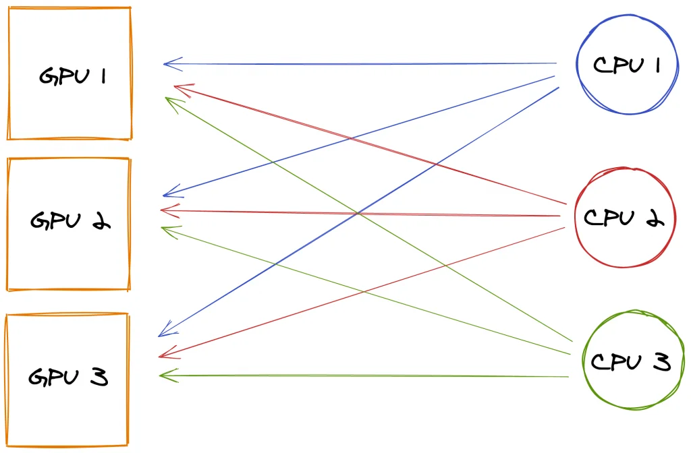

Published: 2020-12-08 | Originally published at AWS Blog
Published: 2020-12-08
Originally published at https://aws.amazon.com/blogs/aws/managed-data-parallelism-in-amazon-sagemaker-simplifies-training-on-large-datasets/
Today, I’m particularly happy to announce that
Amazon SageMaker
now supports a new data parallelism library that makes it easier to train models on datasets that may be as large as hundreds or thousands of gigabytes.
As data sets and models grow larger and more sophisticated, machine learning (ML) practitioners working on large distributed training jobs have to face increasingly long training times, even when using powerful instances such as the Amazon Elastic Compute Cloud (Amazon EC2) p3 and p4 instances. For example, using a ml.p3dn.24xlarge instance equipped with 8 NVIDIA V100 GPUs, it takes over 6 hours to train advanced object detection models such as Mask RCNN and Faster RCNN on the publicly available COCO dataset. Likewise, training BERT, a state of the art natural language processing model, takes over 100 hours on the same instance. Some of our customers, such as autonomous vehicle companies, routinely deal with even larger training jobs that run for days on large GPU clusters.
As you can imagine, these long training times are a severe bottleneck for ML projects, hurting productivity and slowing down innovation. Customers asked us for help, and we got to work.
Introducing a Data Parallelism Library in Amazon SageMaker
Amazon SageMaker
now helps ML teams reduce distributed training time and cost, thanks to the SageMaker data parallelism library. Available for TensorFlow and PyTorch, the data parallelism library implements a more efficient distribution of computation, optimizes network communication, and fully utilizes our fastest
p3
and
p4
GPU instances.
Up to 90% of GPU resources can now be used for training, not for data transfer. Distributed training jobs can achieve up near-liner scaling efficiency, regardless of the number of GPUs involved. In other words, if a training job runs for 8 hours on a single instance, it will only take approximately 1 hour on 8 instances, with minimal cost increase. SageMaker effectively eliminates any trade-off between training cost and training time, allowing ML teams to get results sooner, iterate faster, and accelerate innovation.
During his keynote at AWS re:Invent 2020, Swami Sivasubramanian demonstrated the fastest training times to date for T5-3B and Mask-RCNN.
Before we explain how Amazon SageMaker is able to achieve such speedups, let’s first explain how data parallelism works, and why it’s hard to scale.
A Primer on Data Parallelism
If you’re training a model on a single GPU, its full internal state is available locally: model parameters, optimizer parameters, gradients (parameter updates computed by backpropagation), and so on. However, things are different when you distribute a training job to a cluster of GPUs.
Using a technique named “data parallelism,” the training set is split in mini-batches that are evenly distributed across GPUs. Thus, each GPU only trains the model on a fraction of the total data set. Obviously, this means that the model state will be slightly different on each GPU, as they will process different batches. In order to ensure training convergence, the model state needs to be regularly updated on all nodes. This can be done synchronously or asynchronously:
Unfortunately, these techniques don’t scale very well. As the number of GPUs increases, a parameter server will inevitably become a bottleneck. Even without a parameter server, network congestion soon becomes a problem, as
n
GPUs need to exchange
n*(n-1)
messages after each iteration, for a total amount of
n*(n-1)*model size
bytes. For example, ResNet-50 is a popular model used in computer vision applications. With its 26 million parameters, each 32-bit gradient update takes about 100 megabytes. With 8 GPUs, each iteration requires sending and receiving 56 updates, for a total of 5.6 gigabytes. Even with a fast network, this will cause some overhead, and slow down training.
A significant step forward was taken in 2017 thanks to the Horovod project. Horovod implemented an optimized communication algorithm for distributed training named “ring-allreduce,” which was soon integrated with popular deep learning libraries.
In a nutshell, ring-allreduce is a decentralized asynchronous algorithm. There is no parameter server: nodes are organized in a directed cycle graph (to put it simply, a one-way ring). For each iteration, a node receives a gradient update from its predecessor. Once a node has processed its own batch, it applies both updates (its own and the one it received), and sends the results to its neighbor. With
n
GPUs, each GPU processes
2*(n-1)
messages before all GPUs have been updated. Accordingly, the total amount of data exchanged per GPU is
2*(n-1)*model size
, which is much better than
n*(n-1)*model size
.
Still, as datasets keep growing, the network bottleneck issue often rises again. Enter SageMaker and its new AllReduce algorithm.
A New Data Parallelism Algorithm in Amazon SageMaker
With the AllReduce algorithm, GPUs don’t talk to one another any more. Each GPU stores its gradient updates in GPU memory. When a certain threshold is exceeded, these updates are sharded, and sent to parameter servers running on the CPUs of the GPU instances. This removes the need for dedicated parameter servers.
Each CPU is responsible for a subset of the model parameters, and it receives updates coming from all GPUs. For example, with 3 training instances equipped with a single GPU, each GPU in the training cluster would send a third of its gradient updates to each one of the three CPUs.
Then, each CPU would apply all the gradient updates that it received, and it would distribute the consolidated result back to all GPUs.

Now that we understand how this algorithm works, let’s see how you can use it with your own code, without having to manage any infrastructure.
Training with Data Parallelism in Amazon SageMaker
The SageMaker data parallelism API is designed for ease of use, and should provide seamless integration with existing distributed training toolkits. In most cases, all you have to change in your training code is the
import
statement for Horovod (TensorFlow), or for Distributed Data Parallel (PyTorch).
For PyTorch, this would look like this.
import smdistributed.dataparallel.torch.parallel.distributed as dist
dist.init_process_group()
Then, I need to pin each GPU to a single data parallelism process.
torch.cuda.set_device(dist.get_local_rank())Then, I define my model as usual, for example:
class Net(nn.Module):
def __init__(self):
super(Net, self).__init__()
self.conv1 = nn.Conv2d(1, 32, 3, 1)
self.conv2 = nn.Conv2d(32, 64, 3, 1)
self.dropout1 = nn.Dropout2d(0.25)
self.dropout2 = nn.Dropout2d(0.5)
self.fc1 = nn.Linear(9216, 128)
self.fc2 = nn.Linear(128, 10)
...
Finally, I instantiate my model, and use it to create a
DistributedDataParallel
object like so:
import torch
from smdistributed.dataparallel.torch.parallel.distributed import DistributedDataParallel as DDP
device = torch.device("cuda")
model = DDP(Net().to(device))
The rest of the code is vanilla PyTorch, and I can train it using the
PyTorch
estimator available in the
SageMaker SDK
(make sure to use the latest version). Here, I’m using an
ml.p3.16xlarge
instance with 8 NVIDIA V100 GPUs.
from sagemaker.pytorch import PyTorch
estimator = PyTorch(
entry_point='train_pytorch.py',
role=sagemaker.get_execution_role(),
framework_version='1.6.0',
py_version='py3',
instance_count=1,
instance_type='ml.p3.16xlarge',
distribution={'smdistributed':{'dataparallel':{enabled': True}}}
)
estimator.fit()From then on, SageMaker takes over and provisions all required infrastructure. You can focus on other tasks while your training job runs.
Getting Started
If your training jobs last for hours or days on multiple GPUs, we believe that the SageMaker Data Parallelism library can save you time and money, and help you experiment and innovate quicker. It’s available today at in all regions where
SageMaker
is available, at no additional cost.
Examples are available to get you started quickly. Give them a try , and let us know what you think. We’re always looking forward to your feedback, either through your usual AWS support contacts, or on the AWS Forum for SageMaker.
- JulienJulien Simon is an expert in Practical AI, currently serving as Chief Evangelist at Arcee AI. Named #1 AI Evangelist globally by AI Magazine in 2021, he champions cost-effective, privacy-first AI solutions through Small Language Models, challenging the industry trend toward expensive, large-scale alternatives.
With over 30 years of technology leadership—including executive roles at AWS, Hugging Face, Criteo, and other major companies—Julien has delivered 650+ speaking engagements across 90+ cities in 38 countries. His practical approach empowers enterprises to achieve superior AI outcomes while maintaining cost efficiency and operational simplicity.
© 2025 Julien Simon - Leading Voice in Practical AI | julien.org
{kind=link}